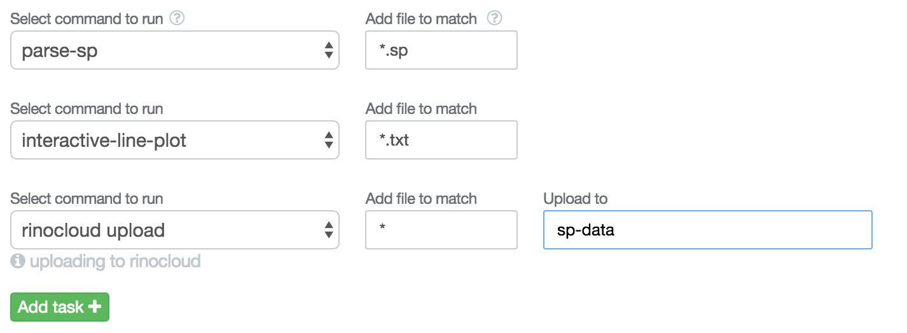

Getting started
Heres everything you need to get Rinobot working in a few minutes.
Download and install Rinobot so that Rinobot can start automatically processing and syncing your data.
Choose a folder on your computer that Rinobot will monitor for data and sync with Rinocloud.
Install some plugins and choose a set of tasks for Rinobot to do on your data.
Example: automatically convert and plot incoming data.
Hows its done.
- Search and install the plugins parse-spc and interactive-line-plot in the 'Plugins' section of Rinobot.
- Choose the folder you want to monitor.
Setup the tasks on the folder by clicking the 'Settings' button under the folder name. Here we setup the parser and the plotter to process the incoming data, and then we upload to Rinocloud.

Press 'Start' and Rinobot will start monitoring the folder.
- When Rinobot notices the appearance of a .spc file it automatically parses it and outputs the spectrum numbers to a .txt file, and it outputs the experimental metadata to a .yaml file.
- Then Rinobot picks up the .txt file and automatically plots it; outputting an interactive plot into a .html file, using other plugins its easy to export to many image file formats.
- Rinobot then uploads all the data to Rinocloud, attaching the metadata to the files to make the easy to search for later.